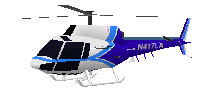
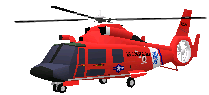
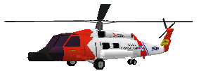
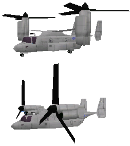
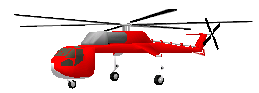
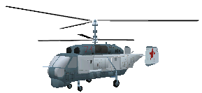
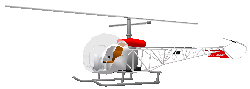
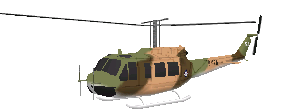

Aircrafts
[ Top |
Contents
]
AS-350
Cruise Speed: 115 kts
Maximum Speed: 153 kts
Maximum Endurance: 3.0 hrs
Maximum Range: 360 nm
Service Ceiling: 8,350' msl
Rotor Diameter: 35' 9"
Length: 35' 10"
Height: 10' 11"
Pilots: 2
Crew: 2
Passengers: 0
Manufacturer: Aerospatiale
Engines: 2
Propulsion Type: Turbomeca Arriel 1d1
rated at 546 kw (732shp)
|

Remarks: Slow and under-powered compared to the other Search and Rescue
helicopters, it does not accelerate too quickly and is very forgiving.
This helicopter makes an excellent trainer and is ideal for first time
pilots.
Note: Does not have a rescue hoist and does not have capacity for
passengers.
Model Author: Tara Milana & Dan Stimiz
|
[ Top |
Contents
]
HH-65 Dolphin
Cruise Speed: 120 kts
Maximum Speed: 165 kts
Maximum Endurance: 3.5 hrs
Maximum Range: 300 nm
Service Ceiling: 7,510' msl
Rotor Diameter: 39' 2"
Length: 44' 5"
Height: 13' 0"
Pilots: 2
Crew: 2
Passengers: 4
Manufacturer: Aerospatiale
Engines: 2
Propulsion Type: Lycoming LTS-101-750B-2
Gas Turbines
|

Remarks: Faster and more powerful than the AS-350, the HH-65 is better
equiped for short range rescues. It has a rescue hoist and capacity for
four additional passengers that you may pick up. However it does not
have a significantly longer range or endurance time compared to the
AS-350. The flight controls are also slightly more responsive and more
sensitive to under/over corrections.
Model Author: Tara Milana & Dan Stimiz
|
[ Top |
Contents
]
HH-60 JayHawk
Cruise Speed: 140 kts
Maximum Speed: 180 kts
Maximum Endurance: 7.0 hrs
Maximum Range: 700 nm
Service Ceiling: 5,000' msl
Rotor Diameter: 54' 0"
Length: 65' 3"
Height: 17' 2"
Pilots: 2
Crew: 2
Passengers: 10
Manufacturer: Sikorsky
Engines: 2
Propulsion Type: General Electric
T700-401C Gas Turbines
|

Remarks: Extremely responsive and powerful, this helicopter has great
acceleration and speed, along with a long 7 hour endurance. It's very
responsive to control movements, so sensitive manuvering requires a
delicate touch. Extra fuel tanks and a low service ceiling make this
helicopter effective only at low altitudes.
Model Author: Tara Milana & Dan Stimiz
|
[ Top |
Contents
]
V-22 Ospray
Maximum Speed: 275 kts
Maximum Endurance: 8.0 hrs
Maximum Range: 515 nm
Service Ceiling: 26,000' msl
Rotor Diameter: 38' 0"
Wing Span: 42' 0"
Length: 57' 2"
Height: 17' 6"
Pilots: 2
Crew: 24
Passengers: 24
Manufacturer: Boeing
Engines: 2
Propulsion Type: Allison T406-AD-400
engines
|

Remarks: As a helicopter, the V-22's performance is similar to the
HH-60. However, the V-22 has much more power and speed due to its two
powerful Allison engines that can pitch forward to fly like an airplane.
It has a slightly shorter range of operation, but can hold more
passengers than the HH-60.
Model Author: Tara Milana
|
[ Top |
Contents
]
S-64 SkyCrane
Cruise Speed: 95 kts
Maximum Speed: 120 kts
Maximum Range: 215 nm
Rotor Diameter: 72' 0"
Length: 70' 3"
Height: 25' 5"
Pilots: 3
Crew: 1
Passengers: 0
Manufacturer: Erickson
Engines: 2
Propulsion Type: Pratt & Whitney
JFTD-12-4A
turboshafts
|

Remarks: The Skycrane is used for construction, fire fighting, and
utility purposes. It is not a search and rescue or transport vehicle.
Its flight characteristics are very bulky, requiring a lot of input to
achieve minimal response. It is not particularly fast but it is
very manuverable in tight areas that require precision flying.
Note: Does not have a rescue hoist and does not have capacity for
passengers.
Model Author: Stefan Maron & Chris Smith
|
[ Top |
Contents
]
KA-27 Helix-D
Cruise Speed: 232 kts
Maximum Speed: 250 kts
Maximum Endurance: 7.0 hrs
Maximum Range: 570 nm
Service Ceiling: 16,406' msl
Rotor Diameter: 54' 7"
Length: 34' 5"
Height: 17' 8"
Pilots: 2
Crew: 2
Passengers: 10
Manufacturer: Kamov
Engines: 2
Propulsion Type: Isotov TV-3-117-V
Turbinen
|

Remarks: This helicopter is primarly a military aircraft, however it has
a search and rescue version that is equiped with a hoist. It has great
power and speed, comparable to the HH-60. It accelerates rapidly and
can climb very quickly (up to 40 feet per second). It has a higher top
speed than the HH-60 but is not as fuel efficient.
Model Author: Stefan Maron
|
[ Top |
Contents
]
B-47
Cruise Speed: 70 kts
Maximum Speed: 87 kts
Maximum Endurance: 2.61 hrs
Maximum Range: 240 nm
Service Ceiling: 17,700' msl
Rotor Diameter: 31' 1"
Length: 31' 7"
Height: 9' 4"
Pilots: 2
Crew: 0
Passengers: 0
Manufacturer: Bell
Engines: 1
Propulsion Type: 210kW Lycoming
TVO-435-F1A 6 Piston
|

Remarks: Very forgiving and easy to fly, this helicopter makes a good
trainer. It is not very fast and does not accelerate too quickly,
resulting in less costly overcorrections.
Note: Does not have a rescue hoist and does not have capacity for
passengers.
Model Author: Stefan Maron
|
[ Top |
Contents
]
UH-1D Iroquis
Cruise Speed: 105 kts
Maximum Speed: 120 kts
Maximum Endurance: 2.5 hrs
Maximum Range: 276 nm
Service Ceiling: 13,600' msl
Rotor Diameter: 48' 6"
Length: 41' 10"
Height: 14' 5"
Pilots: 2
Crew: 2
Passengers: 10
Manufacturer: Bell
Engines: 1
Propulsion Type: Textron Lycoming
T53-L-13 1,400 shp
|

Remarks: A good transport vehicle but underpowered, this large
helicopter can carry a large number of passengers but it is slow and
does not accelerate very quickly.
Note: Does not have a rescue hoist.
Model Author: Stefan Maron
|
[ Top |
Contents
]
|